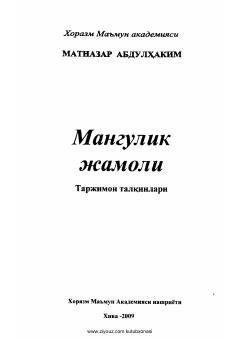

MJOgahiy ijodi va forsiy adabiyot tarjimalariga bag'ishlangan ilmiy-adabiy risola.
Mazkur risola atoqli shoir va tarjimon Matnazar Abdulhakimning Ogahiy ijodini tushunish va tadqiq etishga bag'ishlangan ko'p yillik ilmiy izlanishlari mahsulidir. Kitobda Ogahiy va uning izdoshlari tomonidan fors tilida bitilgan she'rlar tahlil qilinib, mumtoz adabiyotimizning falsafiy-ma'naviy qirralari ochib berilgan.